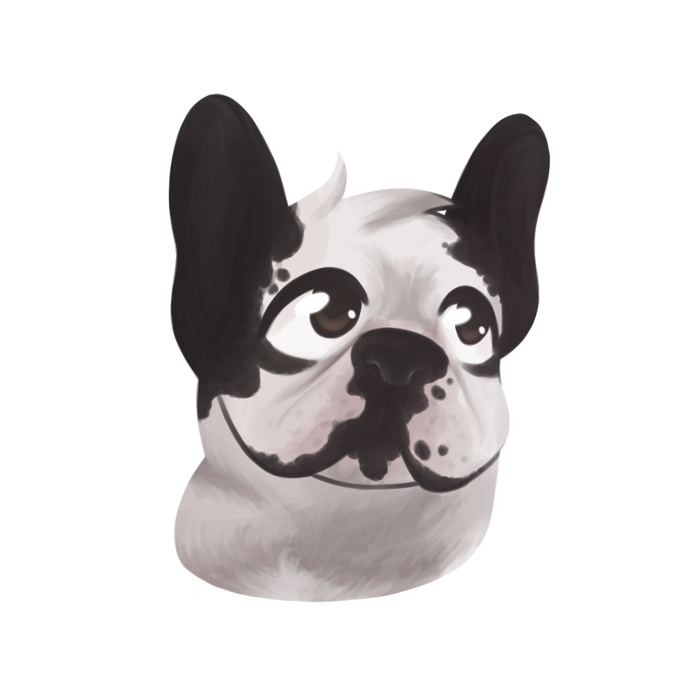
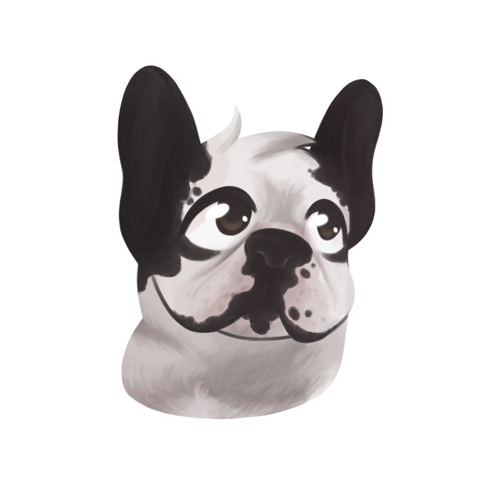

Cathy avec ses Bouledogues Français, Kuro & Shiro
 

1/14
Qu'est-ce que vous appréciez le plus en tant que propriétaire de chien ?
La présence, c’est quelqu'un qui nous écoute et réagit. Surtout que je fais du télétravail.
2/14
Pouvez-vous me parler un peu plus de votre chien ?
J'ai deux petits Bulldogs Français, Kuro et Shiro. Bien qu'ils soient tous les deux mâles, ils ont des personnalités bien distinctes. Kuro est dynamique, gourmand et obéissant, tandis que Shiro est plus pantouflard et têtu.
3/14
Comment avez-vous éduqué votre chien ?
Même si nous les avons éduqués de la même manière, nos deux chiens réagissent de manière totalement différente. Nous les avons élevés en famille avec une éducation axée sur la propreté, l'écoute, le respect de leur environnement et des personnes, mais sans être trop stricts.
4/14
Quelle est votre plus grande réussite avec votre chien ?
Ils sont propres et ne détruisent rien. Ils font tous leurs besoins à l'extérieur, ce qui rend notre retour à la maison agréable après une journée de travail.
5/14
Qu’est-ce qui vous a poussé à prendre un chien ?
Lorsque nous avons acheté notre nouvelle maison, nous avons été attirés par le fait qu'elle avait déjà une niche dans le jardin, ce qui nous a encouragés à envisager d'adopter un chien. Mon compagnon rêvait d'avoir un Bulldog Français, donc j'ai fait des recherches pour en trouver dans la région et j'ai profité pour le lui offrir comme cadeau d'anniversaire.
Quant à Shiro, nous l'avons accueilli pendant le confinement, pour apporter de la joie à nos enfants.
6/14
Comment l’avez-vous choisi ?
Lorsque nous cherchions Kuro, nous voulions trouver quelqu'un de fiable, un éleveur réputé de notre région. Nous avons rencontré la personne en personne, visité les chiens, observé leur environnement, leur mère et leur tante. Nous avons particulièrement observé Kuro et son frère pour voir lequel était le plus attiré par notre présence. Finalement, nous avons choisi Kuro car il venait plus souvent vers nous.
Concernant Shiro, c'est notre fille aînée qui s'est chargée de trouver le chien idéal. Elle a fait des recherches approfondies et a eu des discussions avec l'éleveuse. Nous voulions nous assurer que le chien serait compatible avec Kuro, qui est très sociable. C'était pendant le confinement, donc c’était beaucoup plus compliqué.
7/14
Qu’est-ce qui a changé le plus dans votre vie depuis l’arrivée de votre chien ?
L'arrivée de Kuro a comblé mon compagnon de joie, il était ravi d'avoir un chien à nouveau, d'autant plus qu'il souhaitait cette race depuis longtemps.
Quant à Shiro, sa présence a apporté un grand réconfort à Kuro. Plus de solitude lorsque nous partions à l'école ou au travail, et même la nuit, Kuro n'avait plus besoin de dormir avec nous, il dormait avec Shiro.
Et lorsque je racontait l’histoire à me fille cadette, Kuro ne pleurait plus en bas des escaliers, il était apaisé. La présence de Shiro me rendait plus serein.
8/14
Comment est votre routine avec votre chien ?
Le matin, je laisse mes chiens décider quand ils veulent manger, car je travaille en télétravail. Le soir, je leur donne leur repas avant que ma famille ne dîne pour éviter les suppliques à table. Les promenades sont un peu limitées, mais nos chiens ne sont pas hyperactifs. Cette semaine, Shiro s'est blessé à la patte lors d'une promenade, malgré toutes mes précautions. Ils ont également des problèmes respiratoires, et l'anxiété de Shiro peut parfois lui causer des difficultés à respirer. Nous avons dû faire opérer Kuro pour des vomissements fréquents lors de conditions météorologiques changeantes ou de longues balades. Nous essayons de faire de petites promenades régulières, mais trouver du temps dans notre emploi du temps n'est pas toujours facile. Heureusement, nos chiens peuvent se défouler et profiter du jardin en attendant.
9/14
Avez-vous déjà eu des difficultés avec votre chien ?
J'ai eu quelques problèmes de comportement avec Shiro. Il avait l'habitude de se faufiler sous la haie et de ne pas rentrer à la maison. J'ai dû me mettre à quatre pattes pour aller le chercher la nuit, et après une bonne engueulade, il n'a plus jamais recommencé. Avant l'arrivée de Shiro, lorsque je lisais une histoire à Kuro, il pleurait parce qu'il ne comprenait pas que je reviendrais dans 10 minutes, même si la télévision était allumée. Heureusement, tout cela s'est arrangé depuis l'arrivée de Shiro.
10/14
Comment choisissez-vous le régime alimentaire de votre chien ?
Je préfère donner des croquettes à mes chiens plutôt que de la nourriture molle. La nourriture molle a une odeur désagréable, elle est gluante et ce n'est pas hygiénique. Avec l’aide de mon vétérinaire, j'ai essayé plusieurs types de croquettes pour trouver celles qui conviennent le mieux à leur digestion, leur pelage et leur peau.
Depuis l'arrivée de Shiro, j'ai dû adapter leur alimentation plusieurs fois en raison de ses problèmes de peau et d'allergie. J'offre la même quantité de croquettes à chacun d'eux.
11/14
Pensez-vous avoir été suffisamment préparé pour l’arrivée du chien ?
Oui, je n'avais pas 16 ou 18 ans pour réaliser après-coup qu'il fallait sortir le chien régulièrement, je savais à quoi m'attendre. Cependant, on n'est jamais complètement préparés lorsqu'il y a des problèmes de santé qui surviennent.
12/14
Si c’était à refaire, que changeriez-vous dans ce que vous avez fait avec votre chien ?
Je ne suis pas certaine de vouloir en reprendre, car cela apporte beaucoup de soucis vers la fin de leur vie et ça fait tellement de peine de les perdre. Mais malgré tout, leur présence et leur joie sont inestimables.
Si jamais j'adoptais un nouveau chien, je ferais sûrement plus de promenades, mais malheureusement, je n'ai pas assez de temps à y consacrer.
13/14
Quels comportements indésirables de votre chien vous inquiètent le plus ?
Shiro ne peut s'empêcher de se gratter lorsqu'il se blesse. Et quand ils vont faire pipi sur la terrasse par fainéantise, alors qu'ils finissent toujours par aller faire leur tour dans le jardin ensuite.
14/14
Quels conseils donneriez-vous à un nouveau propriétaire de chien ?
Il est essentiel d'avoir les moyens nécessaires pour prendre soin d'un chien, de comprendre le temps et l'engagement que cela demande. Il faut les nourrir régulièrement, interagir avec eux, les promener de temps en temps, et surtout avoir les ressources financières pour les soins vétérinaires, les vaccins, les vermifuges et les éventuelles opérations. Un chien n'est pas un simple jouet ou une peluche oubliée dans un coin. Malheureusement, il y a encore trop de personnes qui ne prennent pas cette responsabilité au sérieux, ce qui conduit à de nombreux abandons en refuge. Il est important de réfléchir sérieusement et de comprendre les conséquences avant de prendre la décision d'adopter un chien. Dans mon enfance, mes parents ont adopté un chien dans un élevage, puis un autre chien dans un refuge. Ce dernier avait été maltraité par ses anciens propriétaires, et dès qu'il voyait un geste brusque, il était pris de peur et cherchait à se cacher.